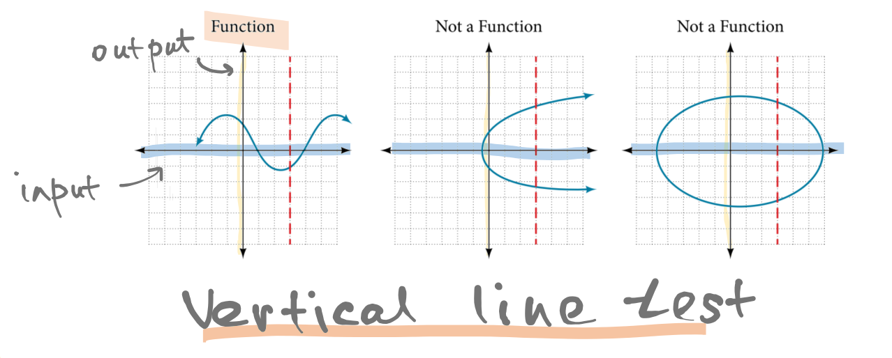
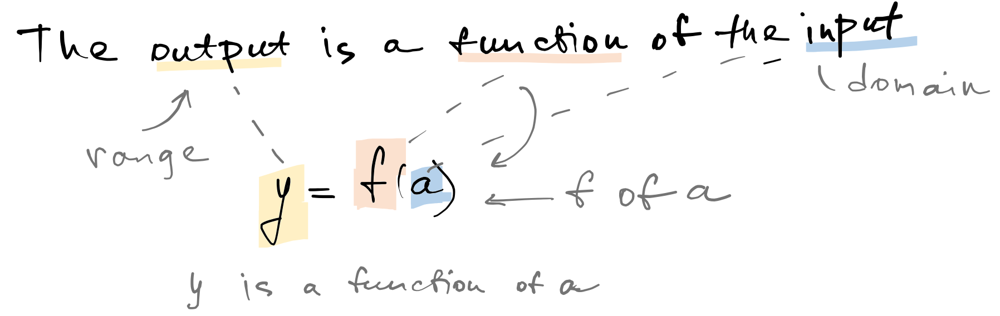
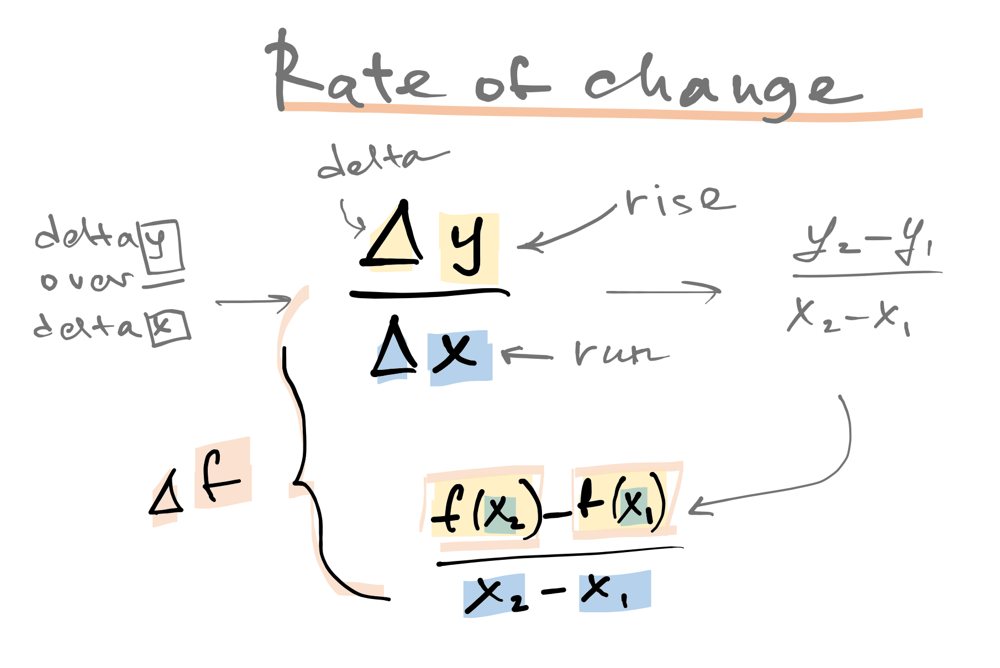

Function
A function is a rule that assigns each element in one set to a unique element in a second set.
Understanding this definition depends on knowing the meanings of the words rule, assigns, and unique.
A function is a set of ordered pairs in which no two ordered pairs have the same first coordinate and different second coordinates.
A graph is the graph of a function if and only if there is no vertical line that crosses the graph more than once.
This criterion is known as the vertical line test.
Domain and Range
A relation is a set of ordered pairs. The domain of a relation is the set of all first coordinates of the ordered pairs. The range of a relation is the set of all second coordinates of the ordered pairs.
The Average Rate of Change of a Function
If \((x_1, y_1)\) and \((x_2, y_2)\) are two ordered pairs of a function, we define the average rate of change of the function as \(x\) varies from \(x_1\) to \(x_2\), as the change in \(y\)-coordinates divided by the change in \(x\)-coordinates, \(\Delta x / \Delta y\): $${y_2 - y_1 \over x_2 - x_1}.$$
